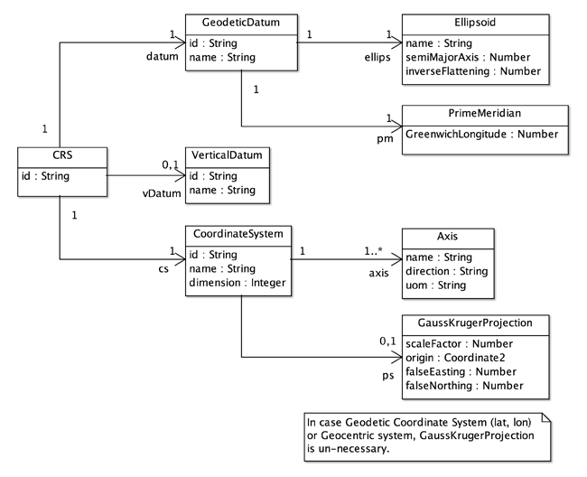

CRS Editor
CRS is an abbreviation of Coordinate Reference System. CRS is defined as "coordinate system that is related to an object by a datum" in ISO 19111:2007 - Spatial referencing by Coordinates. Datum in this case is a geodetic datum that is defined by a set of parameters to describe the shape of the earth and the prime meridian as a starting meridian to measure longitude.This text introduces CRS and then explains CRS Editor page.
Coordinate Reference System
The structure of gittok CRS is defined by the following UML diagram.

Figure 1. UML class diagram of CRS
CRS
This is a root class of whole classes. CRS associates with datum, vDatum and cs.
Attributes
id
an identification of CRS put under the rule adopted by the authority.
Associations
datum